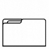

- Acta de conformacion del comite tecnico de Transición Transparente (Descargar)
- Acta de verificación de la información (Descargar)
- Acta del Evento de Transición Transparente (Descargar)
Herramientas de trabajo
Lista de Documentos disponibles
